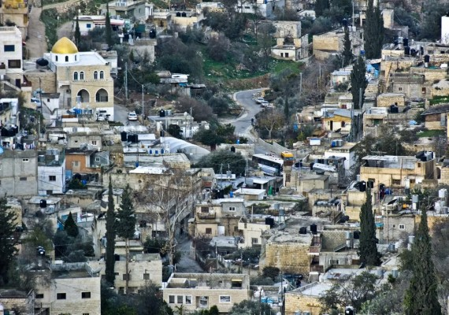
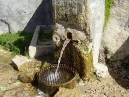

Qattana is a Palestinian-Jerusalem village in the West Bank that belongs to the Jerusalem governorate and is located to the northwest of the city of Jerusalem, and to the north of the town of Abu Ghosh, near the road between Jerusalem and Jaffa. The village of Qatana is located on the ruins of the Kafira, which was from the cities of Canaan. The Kafira was mentioned four times in The Torah, and his modern cotton was built in the year 1000 AH, surrounded by a lot of ruins (the collection of Khirbet, which is a small village) old. It is located to the northwest of the city of Jerusalem, about 18 km away from it, and it is 700 meters above the sea level. It is connected to an internal road that connects to the main road, which is 1.8 km long.
The ancient town of Qatana is considered a historical and archeological town for its residents, as is the water in it, such as Ein Nimr and Ein Namous.
 